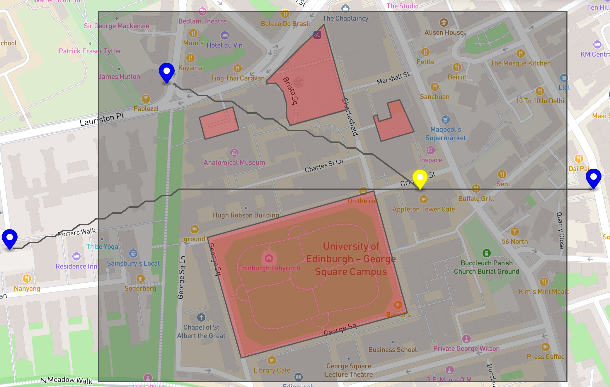

Hi I'm James! :)
I'm an aspiring AI engineer based in the UK.
About Me
I've just finished a master's degree in Artificial Intelligence at the University of Edinburgh. I'm interested in Software Engineering, Machine Learning and anything maths-related.
Outside of that I love running and hitting the gym.
Here are some of the technologies I've worked with:


My Experience & Projects
xDesign - Intern Software Engineer
- Collaborated with a cross-functional team to design and develop a Payroll Calculator and Pension Pot Estimator from scratch in just 3 months for future white-labeling.
- Demonstrated the application at a company-wide event in front of 300+ people, facilitating beta testing and gathering user feedback.
- Quickly acquired knowledge of TypeScript, React, Sass, and Next.js to create a single-page application with data visualizations using Chart.js and custom UI components with React Select.
PizzaDronz
- Developed and implemented an algorithm to navigate a drone across Edinburgh to collect and drop off pizzas while avoiding private areas
- Obtained and handled flightpath information dynamically using a REST API
- Major individual university Java project
Neural Network Magnitude
- Write a backpropagation algorithm for a neural network from scratch without using an ML framework
- Evaluated the 'metric magnitude' of models over training
- Preliminary code for a machine learning dissertation